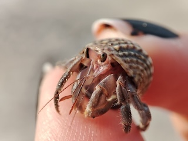

Hermit crabs are a family of crustaceans best categorized by their use of shells produced by other organisms (most often snails). While there are well over 800 documented species of hermit crabs (both aquatic and terrestrial), the two most popular species are Caribbean (AKA purple pinchers) and Ecuadorian hermit crabs, due to their popularity as pets. Due to their soft exoskeletons, they are unable to adequately defend themselves, hence the reason for occupying shells. Because they constantly molt and grow, it is necessary for hermit crabs to look for bigger shells to occupy. In the wild, hermit crabs have been observed fighting one another over shells. (Source: Wikipedia)
Although they are often marketed as inexpensive and "easy" pets, hermit crabs are actually animals with specific needs and requirements that are often not communicated to prospective owners. As a result, a large majority of the hermit crabs in captivity are neglected, receiving insufficient care and often dying prematurely due to their needs not being met. Pet stores and gift shops which sell hermit crabs know this, and continue to provide inaccurate information about hermit crab care in order to sell a higher volume (parents buy hermit crab for child, hermit crab dies quickly, parent buys another hermit crab to replace the old one, cycle repeats). This has led to large debate among hermit crab enthusiasts regarding the ethics of buying hermit crabs, with many advocating against the sell of hermit crabs altogether.
| Crab type: | Ecuadorian | Purple Pincher |
|---|---|---|
| Defining traits: | Little difference between claw size. Elongated eyes. Stripes on side of head. | One large purple claw, one small claw. Short, rounded eyes. "Speckles" on claws. |
| Resilience: | Incredibly sensitive to changes in temperature and humidity. | Easily adapts to changes in temperature and humidity. |